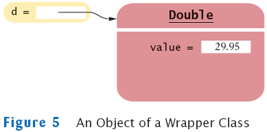

previous
|
start
|
next
Wrappers
You cannot insert primitive types directly into array lists
To treat primitive type values as objects, you must use wrapper classes:
ArrayList<Double> data = new ArrayList<Double>();
data.add(29.95);
double x = data.get(0);

previous
|
start
|
next